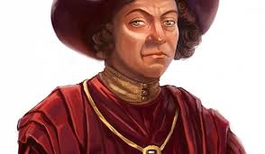
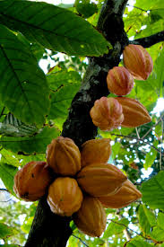

The History Of Chocolate
Hello World! Here is the history of Chocolate from Wikipedia:
The history of chocolate began in Mesoamerica. Fermented beverages made from chocolate date back to 450 BC. The Aztecs believed that cacao seeds were the gift of Quetzalcoatl, the god of wisdom, and the seeds once had so much value that they were used as a form of currency.
Originally prepared only as a drink, chocolate was served as a bitter liquid, mixed with spices or corn puree. It was believed to be an aphrodisiac and to give the drinker strength. Today, such drinks are also known as "Chilate" and are made by locals in the South of Mexico.
After its arrival to Europe in the sixteenth century, sugar was added to it and it became popular throughout society, first among the ruling classes and then among the common people. In the 20th century, chocolate was considered essential in the rations of United States soldiers during war.
It is believed that Christopher Columbus was the first European to discover the existence of cacao tree. It is also believed that Columbus seized some cacao plants from the natives to bring back to Spain. Actually, cacao beans were used as currency for the native South Americans at that time. However, the Spanish King and his court overlooked the value of cacao trees and their seeds’ values. Not until twenty years later when Columbus’s fellow explorer, the Spain's Hernando Cortez, who realized a potential commercial value in the beans when he learnt more from the colonized countries such as Honduras
1828 marked the “modern ear” of chocolate making when Dutch chocolate maker Conrad J. van Houten patented an inexpensive method for pressing the fat from roasted cacao beans along with other processes to create a fine powder known as “cocoa”. The powder was then treated with alkaline salt that help the power the mix the water easily. The creation of powdered chocolate made it easier to mix with water, sugar and a possible combination of other ingredients to make chocolate a solid form. Many other chocolate makers began to build on Van Houten’s success to make a variety of chocolate products.
For much of the 19th century, chocolate was enjoyed as a beverage; milk was often added instead of water. In 1847, British chocolatier J.S. Fry and Sons created the first chocolate bar molded from a paste made of sugar, chocolate liquor and cocoa butter. Swiss chocolatier Daniel Peter is generally credited for adding dried milk powder to chocolate to create milk chocolate in 1876. But it wasn’t until several years later that he worked with his friend Henri Nestle and they created the Nestle Company and brought milk chocolate to the mass market. Chocolate had come a long way during the 19th century, but it was still hard and difficult to chew. In 1879, another Swiss chocolatier, Rudolf Lindt, invented the conch machine which mixed and aerated chocolate giving it a smooth, melt-in-your-mouth consistency that blended well with other ingredients.
Most modern chocolate is highly-refined and mass-produced, although some chocolatiers still make their chocolate creations by hand and keep the ingredients as pure as possible. Chocolate is available to drink, but is more often enjoyed as an edible confection or in desserts and baked goods. While your average chocolate bar isn’t considered healthy, dark chocolate has earned its place as a heart-healthy, antioxidant-rich treat.
Although Belgium may be small and not as well known as other countries in Europe, it is definitely famous for its wide variety of delicacies such as Belgian beer, waffles from Liege, Brussels lace, and of course, Belgian chocolate. Nothing quite beats the delicious, creamy taste of Belgian chocolate. How did this sweet treat become so wildly popular throughout the centuries, and who was responsible for the invention of the ever so addictive praline? It all started in Belgium.
Back in the 17th century, when Belgium was still ruled by the Spanish, explorers brought cocoa beans from South America and introduced them to the Belgian community. At the time, chocolate was a sign of luxury and was mostly used to make ‘hot chocolate’ for nobility or to impress new visitors. In fact, Henri Escher, the major of Zurich, was served a cup of this delicious drink when visiting the Grand Place of Brussels in 1697. He immediately fell in love with it, took the recipe home with him, and introduced his own country to chocolate. Switzerland is now considered Belgium’s biggest competitor regarding the production and distribution of chocolates.
As we all know however, chocolate is no longer exclusive to the rich and famous — though it may taste exquisitely good, anyone can afford it nowadays. The first time Belgium truly delved into the chocolate market was when they colonized the Congo and found a large surplus of cocoa beans. King Leopold the Third then made Belgium the number one trader in cocoa and chocolate. It was Jean Neuhaus (ironically, from Switzerland) who first put Belgian chocolate on the map. In 1857, he moved into a pharmacy-cum-sweet shop in the Galérie de la Reine in Brussels, where he sold plaques of dark chocolate. Gradually, the apothecary transformed into a real sweet shop, and the first praline was created there in 1912. The hollow chocolate shell with a sweet filling was invented by Jean’s grandson (also named Jean) who also invented the Ballotin, the box in which pralines are wrapped. The Jean Neuhaus store still exists to this day, and is deemed a must-see when visiting Brussels.
My Favourite Kinds of Chocolate in Order
- Milk
- Dark
- White
An Assortment of Chocolate

White Chocolate
Dark Chocolate
Milk Chocolate